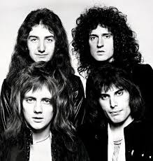

Queen
Banda británica de rock formada en 1970 en Londres.

Integrantes del grupo
Brian May
Freddie Mercury
Jhon Deacon
Roger Taylor
Discográfica
año
Disco
1975
A Nitgh at the Opera
1986
A kind of Magic
1989
The Mirade
"A Kind of Magic" fue el álbum más extitoso.
Sitio web oficial
www.queenonline.com